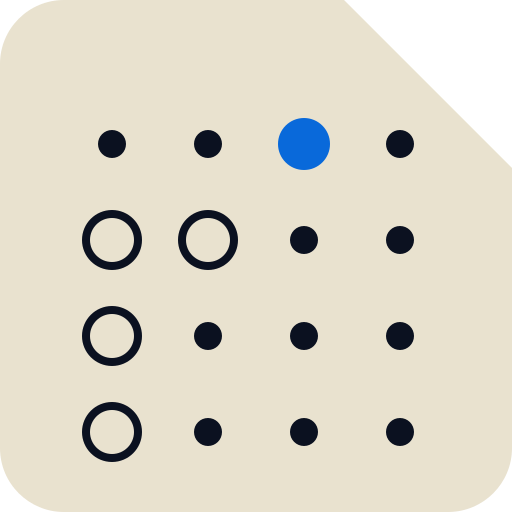
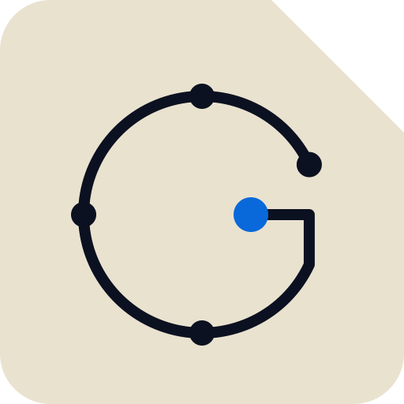
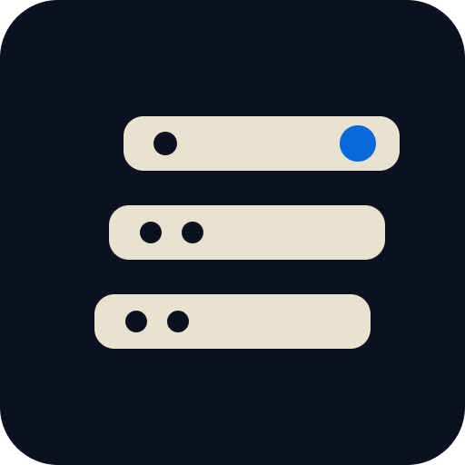

punched card, three holes, blue head commit (reference)
the whole card as data; the real history punched out of the noise

the desk is the reader; one commit passing the slot mouth
the letter G drawn as a commit graph; blue head at the bar end

history as a deck; newest record on top, head commit blue
